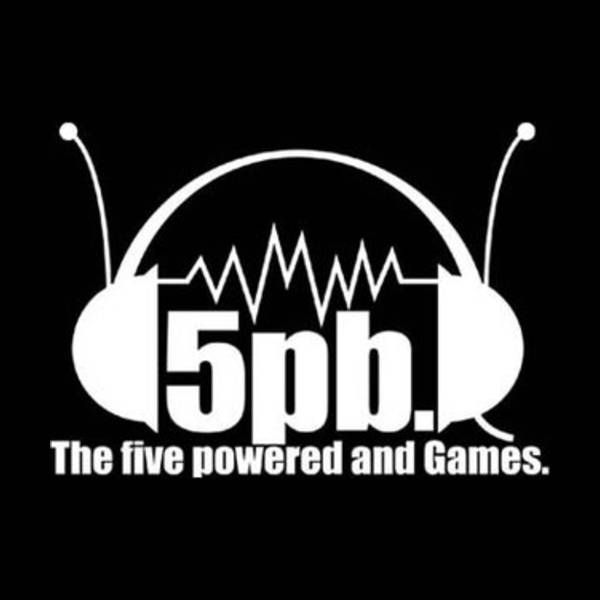
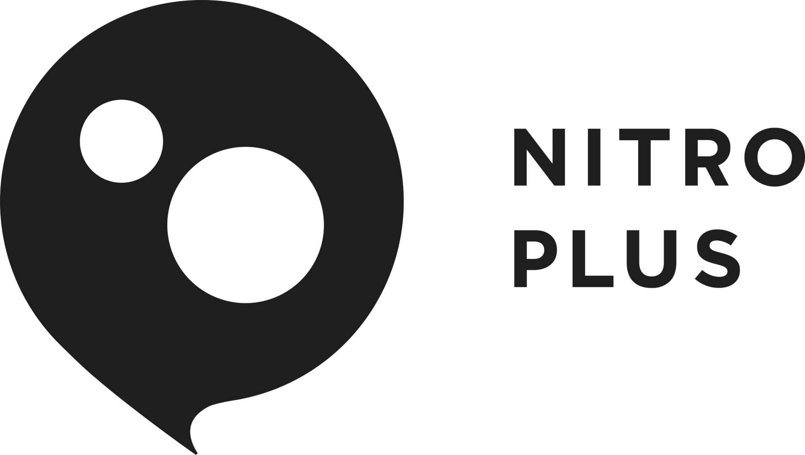

Informações sobre a Equipe
White Fox
Steins;Gate é uma série de anime de 2011 produzida pelo estúdio de animação White Fox com base no romance visual de mesmo nome lançado pela Nitroplus e 5pb. em 2009. Faz parte da franquia Science Adventure junto com Chaos;Head e Robotics;Notes.
Empresa 5pb.
Empresa Nitroplus
Um pouco sobre...
White Fox Co., Ltd. (株式会社WHITE FOX Kabushiki-gaisha Waito Fokkusu) é um estúdio de animação japonesa fundado em abril de 2007. Antes, fazia parte do estúdio OLM. Apesar de ser um estúdio ainda novo, ficou famoso pela adaptação da visual novel Steins;Gate. Outro de seus trabalhos que alcançou sucesso foi Re:Zero Kara Hajimeru Isekai Seikatsu.